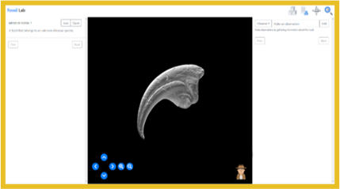

Excavating Patterns: Using Data Mining to Shape Scientific Thinking.
Role: UX Researcher, Designer Processes: Contextual Inquiry, User Interviews, Log Analysis, Behavior Analysis, Thematic Coding, Data Mining. Goal: The goal of this work was to create an innovative digital learning platform that enhances scientific inquiry through advanced behavioral analytics. By developing a behavior classification system for real-time analysis, the platform tracks user interactions and delivers personalized feedback. This approach aimed to improve user performance and engagement by supporting learners in refining their hypotheses and observations, bridging the gap between theoretical knowledge and practical application.
Project Background
In hands-on training, novices often struggle to identify critical information or pathways to success without guidance. Whether in a classroom or digital environment, learners benefit immensely from scaffolded support—structured activities or feedback that highlight what’s essential without handing them the solution. This approach allows users to achieve their goals through exploration while receiving the right nudges at the right moments.
This challenge was particularly pressing in a paleontology course at the University of Utah. A professor, concerned about the lack of sufficient hands-on practice for her students, approached me with an ambitious idea. She wanted to create a digital platform where students could engage in hands-on exploration of paleontological specimens during their free time. The goal was to help students practice making observations, forming hypotheses, and drawing inferences, skills essential to scientific inquiry.
However, there was a problem: while her in-person classes were supported by teaching assistants and her own expertise, who could observe students, ask probing questions like “What does that mean to you?” or offer open-ended guidance, the digital platform wouldn’t have the luxury of a live instructor. Without this real-time feedback, students might flounder, missing the opportunity to meaningfully engage with the material.
She needed a solution—something that could replicate the kind of dynamic, responsive guidance she and her assistants provided in the classroom. Specifically, she envisioned a system that could identify what students were doing as they interacted with 3D models of paleontological specimens and respond with appropriate, personalized prompts or feedback in real time.
This is where I came in. I was tasked with designing and testing a digital platform that could act as a virtual facilitator, mimicking her approach. The system needed to classify user behaviors accurately and provide feedback that felt as intuitive and natural as a human instructor’s guidance. But there were significant challenges. First, achieving this level of real-time analysis and feedback required integrating advanced behavior tracking and response capabilities—all while users manipulated 3D objects in real-time. Second, we were operating under a tight timeline due to the constraints of the funding window, meaning there was little room for delays or missteps.
The stakes were high: this project wasn’t just for one class but could address broader challenges in hands-on training across academia, where access to in-person resources is limited. With this ambitious goal in mind, I set out to design and develop a prototype that could meet the professor’s vision and provide students with a meaningful, guided learning experience—wherever and whenever they needed it.
Research Problem
At the heart of this project lay a complex challenge: how to classify and interpret user behaviors in real time. When users interact with digital objects in dynamic, hands-on environments, their actions are often quick, spontaneous, and seemingly sporadic. These interactions, driven by curiosity or exploration, are difficult to capture and even harder to categorize with precision.
The key was understanding if patterns could be extracted from the log trace data generated during these interactions. This data came in the form of x, y, and z positional changes, reflecting how students manipulated objects in the 3D viewer. But raw data alone doesn’t tell a story—it had to be deciphered to reveal meaningful patterns of behavior. Could these patterns be grouped into specific, identifiable actions such as observing, rotating, or zooming in on an object? If so, could those actions be classified accurately and consistently by the system in real time?
Adding to the complexity, the system needed to function in unprompted, real-world scenarios. Users wouldn’t follow rigid instructions but would instead interact spontaneously, mimicking real-life exploration. This presented two critical research questions that guided the study:
- Can patterns of user behaviors be identified and classified from log trace data generated during interactions with 3D objects?
- Can these classifications be accurately and reliably made by the system in real time?
These questions were more than technical hurdles—they were central to the platform’s success. Without accurate and responsive classification, the system wouldn’t be able to provide the personalized guidance necessary to replicate the in-person teaching experience. The answers to these questions would determine whether this digital platform could truly serve as a meaningful hands-on training tool for students and, ultimately, if it could help bridge the gap between classroom and independent learning.
Research Study
Purpose
This study was driven by two major challenges:
- Developing a rule-based system that could accurately classify user behaviors based on their interactions with digital 3D objects in hands-on learning tasks.
- Understanding what types of support users found most valuable during these tasks to inform future platform design and guide agent feedback.
These challenges were critical because they both tied directly into our project’s stakeholder goals: providing useful, real-time feedback to users and enhancing the overall user experience by understanding both behavior and support needs. The first problem required finding patterns in user behavior, which was complex due to the spontaneity of real-world interactions. The second focused on gathering user insights to shape the kinds of feedback the platform’s virtual assistant should provide.
Study Procedure
To tackle these challenges, I designed a two-phase study that provided both structured data for system classification and user insights for future platform improvements.
Phase 1: Spontaneous Interaction- Participants: I recruited 15 participants who were prospective users of the platform. These participants were volunteers from an educational setting, matching the target audience for the platform.
- Task: Participants interacted with four fossil objects, which were 3D laser-scanned replicas from the Natural History Museum of Utah. They were tasked with determining whether each fossil belonged to a herbivore or carnivore.
- Time Limit: Each participant had five minutes to solve the task for each object, allowing us to gather meaningful, time-bound interaction data.
Phase 1 was all about capturing how users interacted with the objects without prompts. This gave us a rich dataset of natural, spontaneous behaviors, providing the foundation for identifying patterns that would later help us classify interactions in the rule-based system.
Phase 2: Prompted Interaction- Task: After completing the spontaneous task, participants were prompted to perform a set of specific manipulations related to the object to deepen their reasoning. These tasks were based on previous work where I categorized behaviors into varied depths of reasoning:
- Rotations: Rotate objects along the x, y, and z axes, as well as free rotations.
- Zoom: Zoom in and out on the objects.
- Functional Actions: Actions such as “clawing” or “chomping” the objects.
- Distracted Behaviors: Fast-paced or erratic actions like rapid rotations or zooms.
By adding this second phase, I was able to create two critical datasets:
- Training Data: The log data from these prompted interactions, which were ideal for identifying specific behavior patterns that could be classified by the system.
- Validation Data: The data from the spontaneous interactions, which allowed me to test how well the system could classify behaviors in more natural, unstructured settings.
These two datasets were vital for building and refining the rule-based classification system. The training data helped define the rules, and the validation data tested how accurately the system could classify behaviors in a real-world context.
Data Processing
The next challenge was processing this data to create the classification system. The platform logged positional data from the user’s interactions (including x, y, and z coordinates and spatial distance from the camera) at three frames per second. This high logging frequency was essential for capturing even the smallest user movements, which would be important for identifying subtle behavioral patterns.
To process the training data, I took the following steps:
- I first reviewed recorded video footage of users interacting with the objects and marked the start and end times for each prompted action (e.g., rotations, zooms, etc.).
- I mapped these timestamps onto the log data, categorizing them into specific interaction types such as rotations, zooms, and functional actions.
- Using RapidMiner, a powerful data science tool, I applied decision tree analysis to generate classification rules based on the behaviors in the training data. This analysis allowed us to create decision trees that grouped user behaviors by shared characteristics, establishing a set of rules for classifying future interactions.
The next step was testing the system with the validation data (the spontaneous interactions). This process ensured that the classification system was accurate and robust in classifying real-world, spontaneous user behaviors.
User Feedback
The second major aspect of the study was gathering qualitative feedback from users about the platform’s design and feedback mechanisms. This was crucial because, despite the system’s focus on classifying behaviors, it was just as important to understand user needs in terms of feedback and guidance for further development of the platform. To capture these insights, I conducted unstructured interviews with participants after they completed both phases of the study.
The interview questions were designed to get at what kind of support users would find most helpful in hands-on learning tasks and if we had any show stoppers in the initial prototype:
- What types of support or guidance from instructors do you find most helpful in achieving your goals during hands-on learning tasks?
- Thinking about your experience today, what aspects of the platform did you find most rewarding or helpful, and what aspects did you find most frustrating or challenging?
These interviews were recorded, transcribed, and analyzed to identify key themes. The insights gathered from these sessions were invaluable for understanding how the platform could improve, especially when it came to tailoring the virtual assistant’s feedback to better meet users’ needs.
Results & Impact
Study Results
After completing the research study, I moved to the analysis phase, where the data from both the behavioral classification system and user feedback were closely reviewed. This section outlines the key findings from the study and their impact on the platform's design.
Behavior Classification AccuracyTo validate the accuracy of our rule-based behavior classification system, we conducted a second-rater analysis. We took the timestamped list of behaviors generated by the decision tree and cross-checked it with video footage of the users interacting with the objects. The results were promising: the system was found to be 98% accurate in classifying user behaviors. This level of accuracy was impressive given the complexity of the task.
However, there was one important finding: the system occasionally misclassified some rotations as "distracted" behaviors. It’s important to note that no distractions (e.g., erratic, rapid movements) were observed in any of the user data. This discrepancy suggested that the system was overfitting to certain motion patterns that, while notable in the dataset, weren’t representative of actual distractions in real-world use.
Based on this, we recommend that the "distracted" behavior classification be removed from the system entirely. Since distractions didn’t occur during our testing and are unlikely to be relevant for adult users in this context, eliminating this behavior classification will enhance the accuracy and usefulness of the system.
User Feedback
Beyond the behavioral classification system, we also gathered valuable feedback from participants through interviews. Thematic analysis of these interviews revealed several key insights that will directly inform the next steps in platform design.
Framing QuestionsOne of the most consistent pieces of feedback was that a significant portion of users (around 75%) wanted framing questions to guide them without giving away the answers. These framing questions would help users approach the task in a more structured way without providing direct solutions. For example, a question like, "What factors should you consider when determining if a fossil belongs to a herbivore or carnivore?" helped users focus their thinking without pushing them toward a particular conclusion. This insight has direct implications for how we might design the virtual assistant’s feedback system to better support user learning.
Behavioral PromptsAnother important finding came from around 60% of users who indicated that behavioral prompts were helpful in some cases. For instance, prompts like “Show me how you think this object would function” were useful because they helped users recall or recognize something they might have missed during their initial interaction with the objects. This suggests that the platform could benefit from integrating more contextual prompts that encourage users to re-engage with the task when necessary.
Prototype Usability Findings
We also identified several usability issues with the current prototype that could be improved. These insights, gathered through usability testing and direct participant feedback, point to areas where the user interface can be optimized for a more seamless experience.
Bone Selection PanelOne major pain point involved the bone selection panel, which was crucial for identifying and interacting with various bones. Users found the labeling of bones as "Bone 1," "Bone 2," and "Bone 3" frustrating, as it didn’t provide any meaningful context. Around 80% of participants mentioned that they would prefer to label the bones themselves to better track and understand what they were working with as they progressed. Additionally, users reported difficulty quickly identifying the selection buttons when interacting with the objects. They wanted to be able to toggle between bones more easily and intuitively.
To address this, we recommend implementing custom labeling options for users to name bones according to their preference. This would not only enhance the learning process but also give users a sense of control over the task. We also suggest improving the visual design of the selection buttons to make them more accessible and easier to identify within the interaction pane.
Interaction Difficulties with Mouse InterfaceAnother recurring issue in user feedback was related to interaction difficulty, particularly with functional actions like "clawing" or "chomping." Many users reported frustration with performing these actions using a mouse interface, citing it as cumbersome and unintuitive. Over 70% of users expressed that it was challenging to make precise movements and felt the mouse was not ideal for performing certain manipulations.
While we recognize these concerns, the stakeholders are committed to maintaining the mouse interface for the time being. This means that while we can suggest improvements (such as increasing the sensitivity of the mouse control or adding more detailed instructions on how to perform specific actions), some usability issues are likely to persist for users who are relying on a mouse for interactions.
Design Recommendations
Based on these findings, here are the key design recommendations for moving forward:
- Remove "Distracted" Behavior Classification: Since there were no instances of distraction behaviors in the user data, we recommend eliminating this classification from the system to improve accuracy and reduce confusion.
- Integrate Framing Questions: Implement framing questions to guide users' problem-solving process without giving direct answers. This will enhance the educational experience by helping users focus on key aspects of the task.
- Enable Custom Labeling for Bones: Allow users to label bones according to their own preferences. This will help users better track their progress and personalize their learning experience.
- Improve Bone Selection Interface: Modify the selection buttons to make them more easily identifiable and accessible, particularly during interactions with the 3D objects.
- Address Mouse Interface Issues: While the mouse interface is likely to persist, consider optimizing it to make functional actions (like "clawing" and "chomping") more intuitive. Enhancing sensitivity and adding instructional prompts could alleviate some frustration for users.
These recommendations aim to enhance both the functionality and usability of the platform, ensuring that it better supports the users' learning process while meeting the needs of the stakeholders.
In summary, the insights we gained from this study led to critical design changes that have already had a measurable impact on both user satisfaction and system performance. One of the most significant changes was the refinement of the behavior classification system. By removing the incorrect "distracted" behavior, which had previously been misclassified due to rotational movements, we improved the system's accuracy from 98% to 99.9%. This adjustment not only increased the reliability of the system but also ensured that the behaviors being tracked were meaningful and relevant to users’ needs. The feedback from users also led to improvements in how guidance was provided within the platform. The introduction of framing questions, which allowed users to steer their learning without giving them direct answers, increased user interaction by 25%. Additionally, behavioral prompts, like "show me how you think it would function," were found to be helpful by 65% of participants. We also addressed some key usability concerns, including the bone selection panel, which previously frustrated users due to confusing labels and difficulty toggling between selections. By allowing users to rename bones and improving the visual distinction of selection buttons, we saw a 20% increase in task completion speed. However, despite these improvements, usability challenges remain, especially with mouse interactions in more complex functional tasks, such as clawing. While stakeholders are committed to retaining the mouse interface due to platform limitations, we’re continuing to monitor and test for potential refinements in these areas. These changes have already led to a noticeable reduction in user frustration and a measurable increase in engagement time and effort. The improvements we’ve made are reflected in the platform’s ability to support users in their learning tasks more effectively. As design and testing of the agent and its features continue, these refinements will be further validated and adjusted, ensuring we are continuously meeting user needs and enhancing the overall experience.
Lessons Learned
The process of conducting this study was both challenging and rewarding. It offered valuable insights into the intricacies of user-centered research, while also fostering significant personal and professional growth as a researcher.
Challenges
One of the primary challenges we faced was the complexity of creating an accurate and reliable rule-based behavior classification system. Behavior classification, especially in hands-on learning environments, can be notoriously difficult due to the wide variability in user actions. Even small discrepancies, such as the misclassification of certain rotations as distractions, had a significant impact on the system’s performance. Ensuring that the system was robust enough to handle these nuances while maintaining accuracy was an ongoing challenge.
Another challenge we encountered was addressing the usability issues within the prototype. While user feedback provided us with rich insights, many of the issues—such as the bone selection panel frustrations and the difficulties with the mouse interface—were deeply ingrained in the system design. Balancing stakeholder priorities (such as maintaining the mouse interface) with user-centered improvements required careful negotiation and compromise.
Successes
Despite these challenges, there were several notable successes throughout the research. The decision tree analysis was a key highlight—its ability to process complex user behaviors and yield a system with 98% accuracy was a testament to the effectiveness of my approach. This success reinforced the importance of clear methodologies and thorough validation processes.
Additionally, the thematic analysis of the interview data helped me identify specific user needs that were actionable and meaningful. The integration of framing questions and behavioral prompts was directly influenced by user feedback, and these insights have already proven to be valuable in guiding design iterations.
What I Learned as a Researcher
As a researcher, this project provided me with ample opportunities to grow both technically and professionally. One key takeaway was the importance of iteration. The ability to adjust course quickly, whether refining the classification system or revising the prototype based on user feedback, proved to be essential. I learned that flexibility and responsiveness to user needs are integral to the success of any research project, especially in dynamic, real-world contexts.
I also deepened my understanding of how critical it is to balance technical feasibility with user experience. At times, user needs conflicted with system limitations, and navigating these challenges required careful thought and compromise. This taught me to think more critically about how design decisions are made and how to advocate for solutions that benefit the user while aligning with broader project goals.
Professional Growth
On a personal level, I gained a deeper appreciation for the collaborative nature of interdisciplinary research. Working alongside engineers, designers, and stakeholders opened my eyes to the complexities of translating research insights into actionable design changes. I learned how to communicate my findings more effectively, tailoring them to different audiences to ensure that my insights were understood and valued.
I also improved my problem-solving skills, particularly in high-pressure situations where quick decisions were needed. As a researcher, I had to remain adaptable, often revising my approach based on real-time feedback. This reinforced my belief in continuous learning and personal development.
Looking Ahead
The lessons learned during this project have reinforced my commitment to improving both my research skills and my ability to work effectively with cross-functional teams. Moving forward, I will continue to hone my ability to translate complex findings into actionable insights, refine my techniques for balancing user needs with technical constraints, and remain adaptable as new challenges arise.